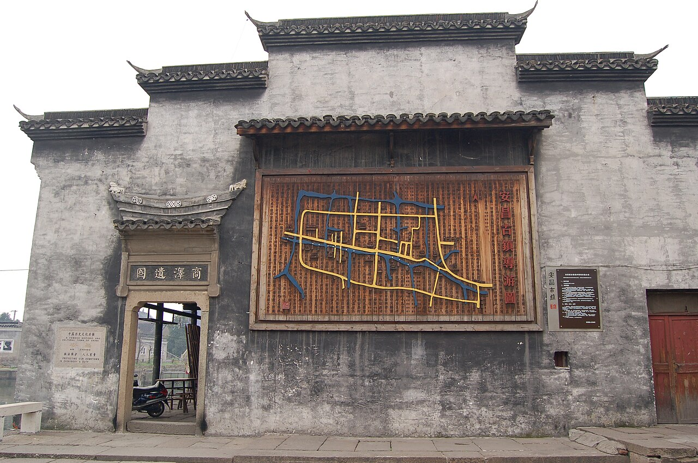

🏮 安昌古镇
原生态水乡 · 爸爸逛吃 + 女童坐船
免费大区乌篷船距金沙7km

实景照片 · 来源 Wikimedia Commons（CC协议）
← 返回主计划
位置与交通
- 地址：绍兴市柯桥区安华北路
- 距金沙酒店：驾车约 7km / 15分钟
- 大景区 24小时免费开放；停车收费但车位充足（P1地上停车场）
价格参考（1.27m女童按儿童票）
| 项目 | 价格 | 说明 |
|---|
| 大街区 | 免费 | 主街免费，够逛 |
| 小景点联票 成人 | 50元 | 师爷馆/城隍殿/钱庄等6馆 |
| 小景点联票 儿童(1.2–1.5m) | 30元 | 女童适用 |
| 乌篷船 | 约100–150/船 | 按船计价，建议错峰 |
2大1小联票约80元 + 乌篷船100–150元，整体很便宜。
特点与适合谁
- 仁昌酱园、师爷馆、腊肠扯白糖、酒酿馒头——爸爸逛吃主场。
- 红灯笼夜景 + 乌篷船，女童坐船最爱，傍晚亮灯最出片。
- 比乌镇/西塘安静，未被过度商业化，适合小家庭。
注意事项
古镇河岸多处无护栏、青石板不平、桥多，带6岁女童务必牵手、避开人潮河段。夜游比白天更美但更暗，注意脚下。